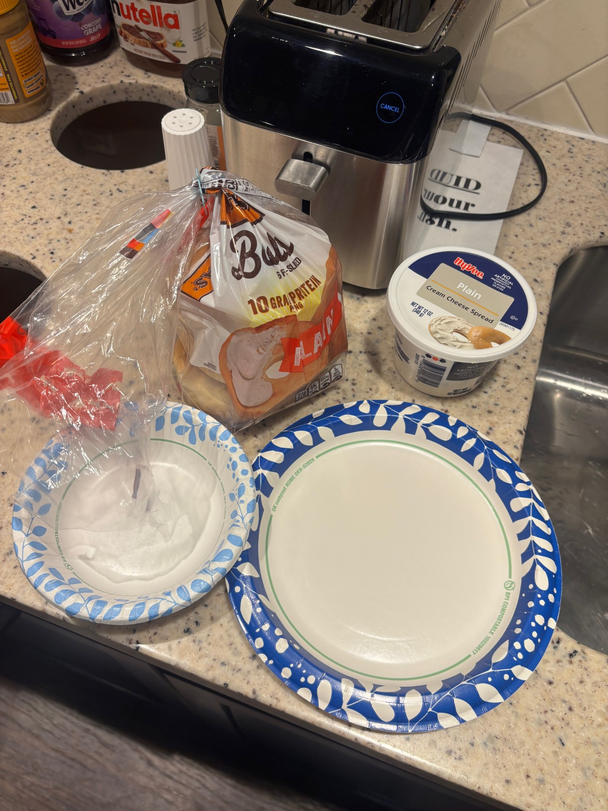
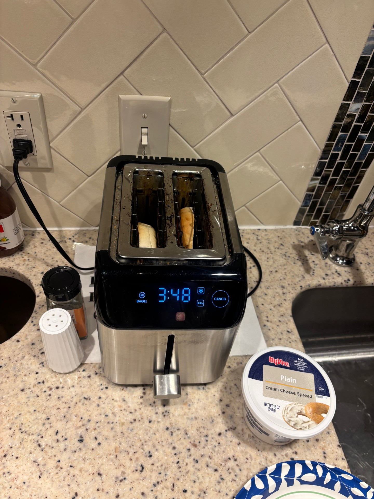
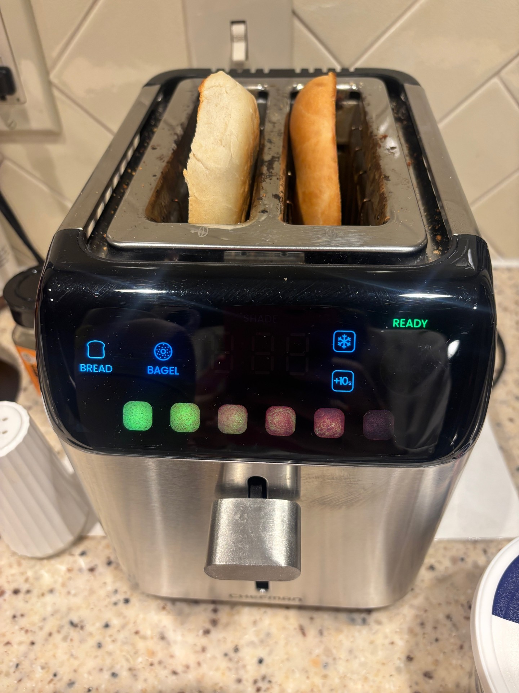
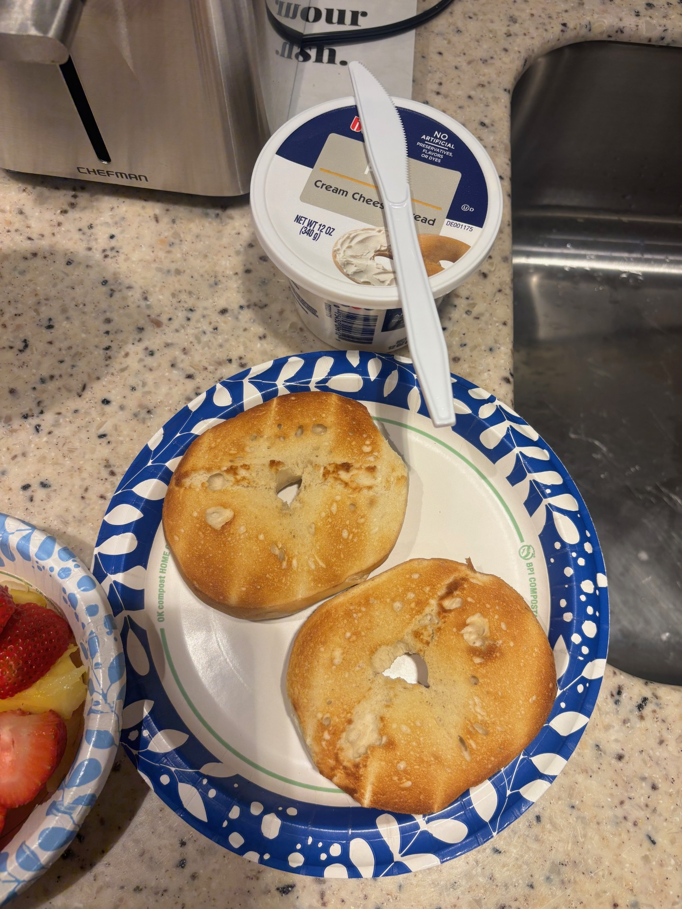
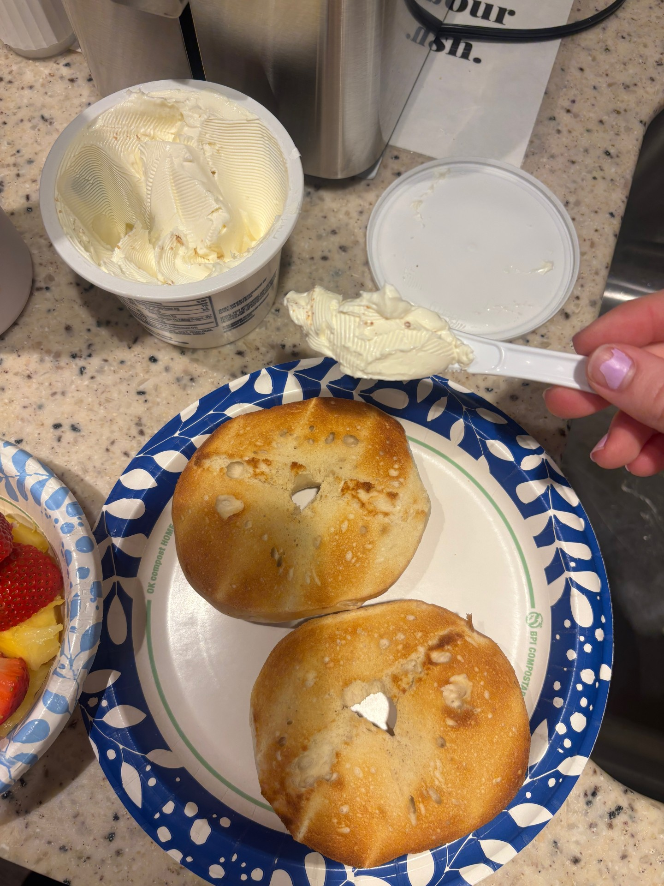
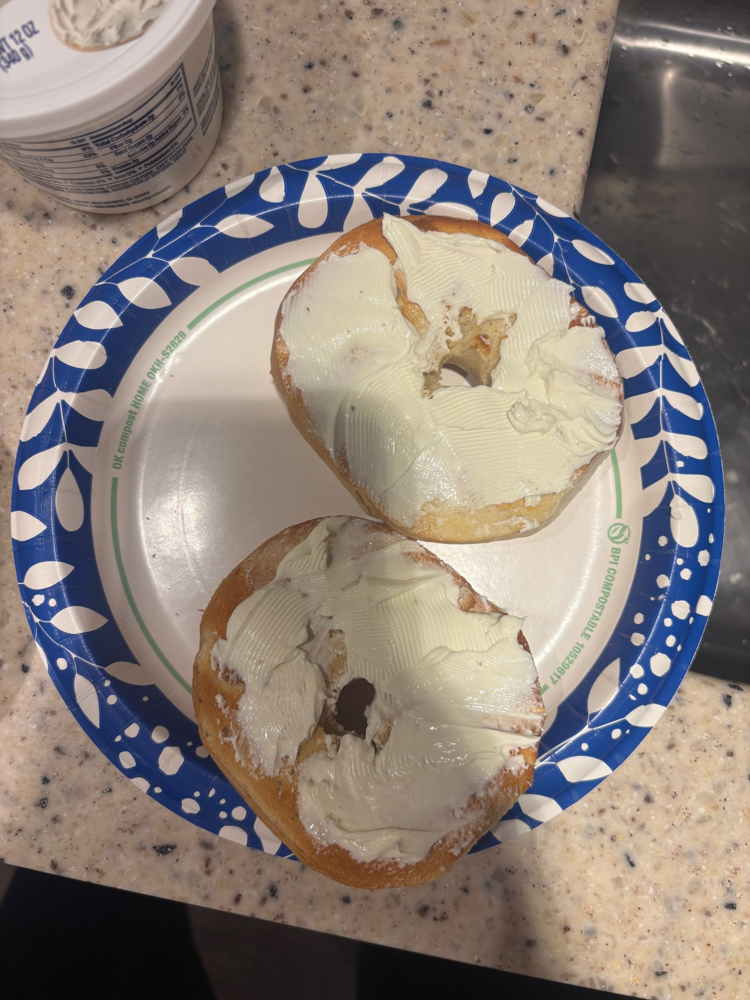
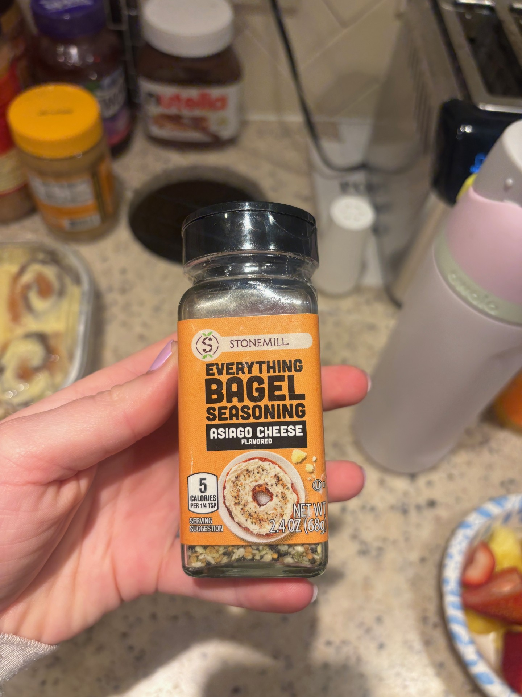
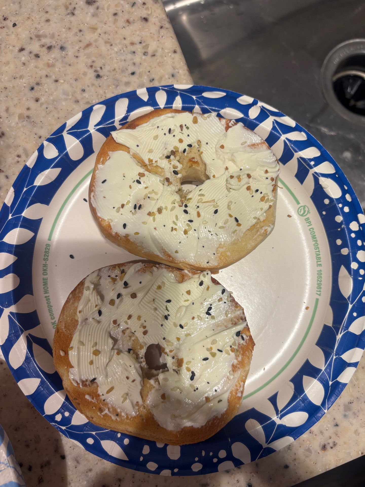

Making the perfect bagel is a simple joy that starts with a few basic ingredients and a little bit of love. In this photo story, I will walk you through the easy steps of toasting a plain bagel, spreading on cream cheese, and adding a flavorful twist with Everything Bagel seasoning. Each photo captures a step in the process, from gathering your materials to the final, delicious result.
Utensils and plates shown for bagel making.
Plain bagels and cream cheese displayed in refrigerator.

Plain bagels and cream cheese displayed in front of toaster.

Plain bagel toasting.

Toaster displaying ready bagel.

Toasted bagel on plate.

Optimal amount of cream cheese displayed.

Cream cheese spread evenly.

Everything Bagel Seasoning Asiago Cheese Flavoring.

Finished bagel with seasoning.